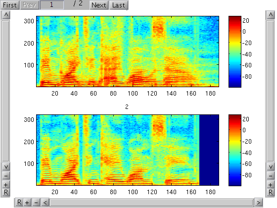

[dsrc1 fs] = wavread('sounds/ssc/clean/t25_bwik1s_m25_bgwf4n.wav'); [dsrc2 fs] = wavread('sounds/ssc/clean/t25_bwik1s_m25_bgwf4n_masker.wav'); dmix = dsrc1 + dsrc2; NFFT = 640; NWIN = NFFT; NHOP = NFFT / 4; Ssrc1 = dB(stft(dsrc1, NFFT, NWIN, NHOP)); Ssrc2 = dB(stft(dsrc2, NFFT, NWIN, NHOP)); Smix = dB(stft(dmix, NFFT, NWIN, NHOP)); Msrc1 = melfcc(dsrc1); Msrc2 = melfcc(dsrc2); Mmix = melfcc(dmix);
plotall lets you organize multiple subplots using a single function call.
plotall(Smix, Ssrc1, Ssrc2); % Note that this is equivalent to passing in a cell array of data as a % single argument: plotall({Smix, Ssrc1, Ssrc2});
% Note the nifty scrollbars that let you pan and zoom the x-, y-, and % color axes. Left click and drag to scroll. Right click to zoom. plotall(Smix, Ssrc1, Ssrc2)
% plotall can automatically manage subplot layout. % (Note that subplots are filled in row-wise) plotall(Smix, Smix, Ssrc1, Ssrc2, 'subplot', [2 2]);
% Let each subplot have independent y and color axes, but keep the time % axis fixed across all subplots. plotall(Ssrc1, Msrc1, 'align', 'x')
% Sometimes you don't want anything to be aligned. plotall(dsrc1, Ssrc1, 'align', '')

% If the 'subplots' property is set but there are more arguments than % subplots, the subplots are split over multiple "pages". Pages can be % navigated using the controls on the top right of the figure. % See the 'plot_pages' function for another way to get this functionality % without the rest of plotall's goodies. plotall(Smix, Ssrc1, Ssrc2, 'subplot', [2 1])
% You can pass in name-value pairs to configure different properties % of the subplots. Passing cell arrays in lets you configure % different properties for each subplot, otherwise properties are % shared across all subplots. See 'help plotall' for more details. t = [1:NHOP:length(dmix)] / fs; % Quantize things to the nearest hundredth of a second. t = round(t * 100) / 100; xticks = 1:20:length(t); f = [0:NFFT/2] * fs / NFFT * 1e-3; yticks = 1:80:length(f); plotall(Smix, Ssrc1, Ssrc2, 'clim', [-25 25], 'colorbar', false, ... 'ytick', yticks, 'yticklabel', f(yticks), ... 'ylabel', 'Frequency (kHz)', ... 'xtick', {[], [], xticks}, 'xticklabel', t(xticks), ... 'xlabel', {'', '', 'Time (seconds)'}, ... 'title', {'Mixture', 'Clean source 1', 'Clean source 2'}, ... 'pub', true) % "'pub', true" turns off scrollbars.
help plotall
plotall(data1, data2, ..., datan, property1, value1, property2, value2, ...)
Plots all of the matrices contained in data1, data2, ... as subplots
of the same figure.
A series of name value pairs that correspond to optional settings
and various Matlab plot properties can optionally be passed in.
Supported properties applied across all subplots (default value):
'align' ('xyc'): set axes to be aligned. can be any
combination of 'x', 'y', and 'c'
'colorbar' (true): if true displays a colorbar next to each plot
'colormap' (colormap): colormap to use
'figure' (gcf): figure handle
'fun' (@(x) x): function to be applied to each element of
data before plotting
'order' ('r'): ordering of subplots ('r' for row-major order
or 'c' for column-major order)
'pub' (false): If true, try to make nicer looking
plots suitable for publication
'subplot' ([n 1]): subplot arrangement
If the 'pub' property is false, additional GUI controls are added to
the figure, including scrollbars to control panning, zooming, and
'caxis' settings. Also, if n is larger than the number of subplots
specified in the properties, s, then only s subplots will be
displayed at a given time, but paging controls will be added to
figure to give access to the remaining n-s plots.
Supported per-subplot properties (default value):
'axis' ('xy'): set axis appearance or scaling
'plot_fun' (@plot_or_imagesc): function to use for plotting each element
of data
'title' ({'1','2',...}): titles for each matrix in data
'xlabel' (''): x axis label
'ylabel' (''): y axis label
'zlabel' (''): z axis label
Other valid per-subplot axis properties and values (e.g. 'CLim',
'XLim', 'XTick') can be passed in as well.
Each per-subplot property value can be either a scalar, in which
case the same value is applied to all subplots, or a cell array
which specifies the values for each subplot individually. Finally
if value specified for one of these properties is a function that
takes no arguments, it will be evaluated each time the property is
set. For example, is useful for adjusting the units of tick labels
without knowing where the ticks are in advance. E.g. setting
'xticklabel' to @() get(gca, 'xtick')*1e-3 can automatically convert
the horizontal axis labels from milliseconds to seconds.
2008-11-12 ronw@ee.columbia.edu
Ron Weiss (ronw@ee.columbia.edu)
You can download this project in either zip or tar formats.
You can also clone the project with Git by running:
$ git clone git://github.com/ronw/plottools